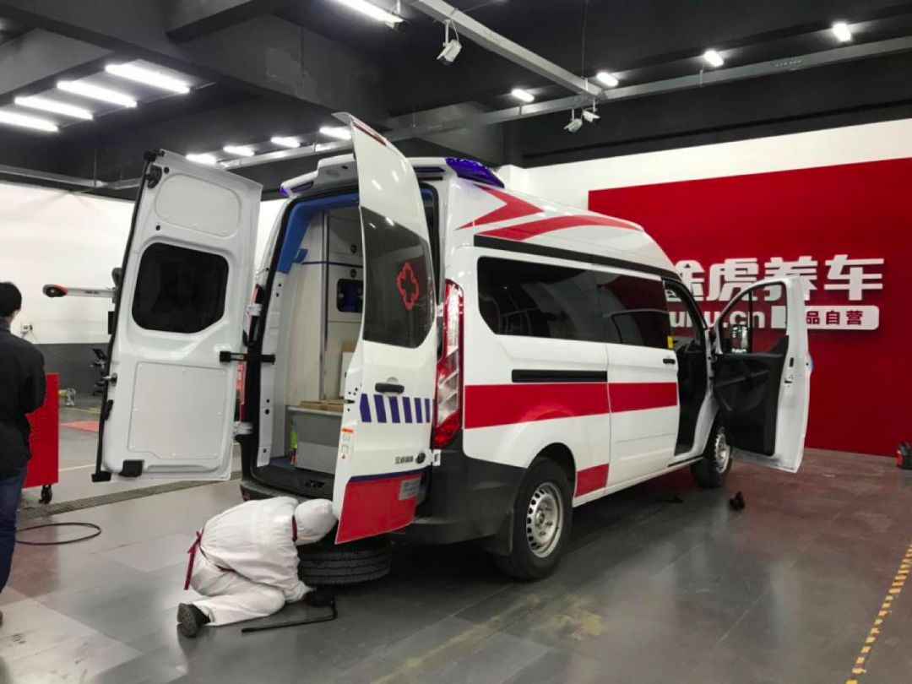
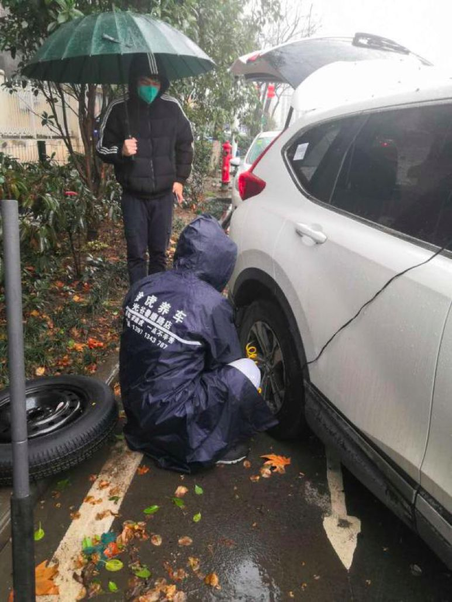

叶青疫区日记：三声惊雷
原文链接 备份链接 点击上方蓝字 _ 关注我们 _ 非常时期，武汉成了全国人民挂念、祈福的城市。封城后，武汉人民的真实生活是什么样？ 正和岛自1月26日起特别推出《叶青：我在武汉疫区的第N天》专栏。叶青是一位定居武汉40年的市民，也是一名 …
说辛苦我们真不觉得，这点辛苦不算什么。我们最难过的是很多时候因为供应商停工停产，汽车零部件紧缺，让我们想修都修不好，耽误了事。到目前为止，我已经记不清出了多少次救援任务了，所有一线防疫人员都是在跟病毒赛跑，我们更不能拖延一秒钟。
口述 | 谢红亮
整理 | 吴 雪
2月15日，武汉遭遇大风、雨雪和断崖式降温14℃，气温一下子降到-2℃，路况变得更复杂，给我们的救援工作带来更大的压力。
那天的江汉大桥上，依然是灯火通明，空旷的桥面上，隔几分钟就有闪着蓝灯的救护车疾驰而过。当时我在东湖风景区鲁磨路上的修车店里，正拿着75%的酒精喷洒消毒。
我是谢红亮，今年37岁，荆州市天门人，在武汉开了一家汽修店。2月1号，我和我们还在武汉的几十个同事，一起成立了一个紧急救援服务队，专门给武汉的医生的车、警察的车、海关的车等等，所有能救援的疫情防控车辆，做免费救援。
我的店成立时间并不长，2019年10月才开业。但是因为开店的时间点正赶上武汉军运会（编者注：第七届世界军人运动会），经营状况很不错。按照原计划，春节过后，店铺就将陆续回本，日子也能渐渐好起来。
但是没想到，1月22日疫情突然变得严重起来，本来我们准备“春节不打烊”的，但是临时决定都先关店了。腊月二十九（1月23日），武汉封城，紧接着，武汉市公交停运，机动车禁行。

谢红亮的修车店
大年初三开始，我陆续接到车友的求助电话，说车辆抛锚了，问我能不能救援。那时我的想法很简单：虽然还没开工，但我是个修车人，每个角色有每个角色的任务和价值，更何况在今天这样的特殊时期，我更没有理由退缩。
当时家里人都在居家隔离，听说我要出去救援，我妻子不是很愿意：“能不能不要出去了，家里还有孩子啊。”
我理解她的想法，但是能做点事情的时候却躲在家里，我干不出来这种事。经历了一轮“家庭会议”后，我们初步达成共识：义务救援可以去，但是要搬出去到外面住，不能给家里，尤其是孩子带来那么大的风险。
就这样，我终于又“开工”了。

谢红亮正在救援一辆救护车
我打电话给我们店的技师李永雷，问他愿不愿意跟我一起去救援，他也很积极。李永雷是河南信阳人，武汉封城后就没回去了。当时武汉基本上没有什么汽修店在营业了，所以我们跑的范围比原来大很多。得知救援任务繁重，兄弟门店临江大道店的老板也前来支援我们。
第一天，我们就接到了一通特殊的救援电话，求救的是大名鼎鼎的雷神山医院的建设者。那是中建三局的建设车组，主要负责武汉雷神山医院的建设指挥工作。对方说接驳工地的指挥车辆，突然出现挂不上挡的故障。
当时雷神山医院刚刚开工三天，我们的店在东湖风景区，他的位置在江夏区强军路，相距超过20公里。非常时期，距离不是考虑的主要因素。所以我们接到消息后，立刻赶去现场做了临时处理。
雷神山医院、火神山医院是全国人民关注的热点，大家不知道的是，这两个地方也是我们救援的热点，后来的几天，我们救援队员来过这里很多次。

雷神山医院 图片来源：人民日报微博
新闻报道说，2月8日雷神山医院正式投入使用后，到现在已经有不少治愈患者顺利出院了。看到新闻，我心里特别有成就感。随着疫情发展，原本我们自发进行的救援，越来越力不从心。1月底，了解到“抗疫前线”对汽车救援需求很大，汽修人必须尽快出动的情况，公司开始紧急介入。
2月1日，公司宣布紧急救援服务队正式成立，24小时免费救援，所有的费用公司承担，这下我们找到“靠山”了。救援群很快建好了，当时群里人员一共有76个，包括客服、运营、修车师傅等，还开通了救援专线电话：400-111-8896。客服在接到求助后，确认是否为医护人员、志愿者和保障人员，然后根据距离远近，统一分配到临近区域的救援队员手上。
后来的日子里，我们又救援了警察公务车、志愿者送餐车、医护人员接驳车、电视台直播车等。按照要求，我们需要24小时待命的，所以哪怕凌晨一两点出动去救援，也不是什么稀罕事。很多人和我说“你们辛苦了”，其实接触了那么多行走在防治疫情路上的人，我觉得医务人员才真是最辛苦的。
在我们救援的车辆里，医护人员是占比最大的之一。而且他们大多有一个共同点：看上去特别疲累，十个有九个都是黑眼圈；如果车坏了有故障，只能下夜班的轮休日来修。最让我心疼的是两口子都在前线的，孩子只能送到亲戚家暂时照看，这样医生有很多。每每我去医院紧急救援医生车辆的时候，看到在他们排成一排席地而睡，我心里都特别难受。

**武汉医院工作人员拍摄的医生席地而睡的场景 图片来源：医护人员供图**
平常每天我们接到的救援大约是三四十单，武汉大降温，下雨下雪的那几天，天气恶劣让救援量也大大增加，2月16号，我们单日救援次数更是超过了100次。
2月18日，有一名车主求助，车子打不着火了。到地方之后，才发现车主的身份有些特殊——武汉市病毒研究所的研究员。因为工作需要，他需要经常往返金银潭医院。任务紧急，检查了车辆之后我发现，需要更换电瓶。我快速返回公司仓库，找到了一个电瓶，帮他免费换了，型号虽然不一样，但在保证安全的情况下，解了他的燃眉之急。

谢红亮与李永雷在武汉病毒所修完车， 拍下了照片
最让我难忘的是下雪的那次救援，让我心里很温暖。那天下着雨夹雪，气温降到-2℃。武汉中南医院的医生一早打电话求助，说他的车子两个轮胎都没气了，找了一圈都没有修车店开门。我一听是医护人员的车，赶紧拿了根气棒，很快就过去了。
去的路上，又接到这位医生的电话：“天气那么冷，要不你们别来了，我很过意不去。”本身都在危险的一线没日没夜地战斗，他还在担心我们辛苦，让我唏嘘不已。我说没问题，安心等着我来就行。到地方后发现需要补胎，我和李永雷给两个车胎充了气，支撑着把车开到了店里进行补胎。这位医生一再对我们表示感谢，说得我都不好意思，你说我们做的工作，哪里及得上他们啊！

武汉雨夹雪，气温降到-2℃，救援队员冒着雨雪外出救援

谢红亮正在检查轮胎
我只是途虎养车紧急救援服务队中的其中一员，与我并肩作战的还有从海南连夜开车返回武汉的修车师傅李昌，95后的年轻师傅卢顺以及奋斗在孝感、郑州、西安的其他三支，好几十个人组成的大队伍。
说辛苦我们真不觉得，这点辛苦不算什么。我们最难过的是很多时候因为供应商停工停产，汽车零部件紧缺，让我们想修都修不好，耽误了事。到目前为止，我已经记不清出了多少次救援任务了，所有一线防疫人员都是在跟病毒赛跑，我们更不能拖延一秒钟。

救援服务队队员在工作中

武汉街道以往热闹的景象
2月20日晚上九点，我坐在宿舍的高低床，看着一张张救援的照片，回想往年春节时候，武汉市区都是最热闹的，街头随处可见的早点摊，挤公交的上班族，堵在路上的车流……满满的都是烟火气。而今天，在武汉街头，突然间变了景象，荒凉刺骨而来，静下心数，每隔一会就有一辆鸣笛的救护车开过。
最近几天，雨雪过后武汉放晴了，我和许多武汉人一样，等待着这座城市好起来。
文中除注明外，图片均为受访者提供

征集令
《新民周刊》现面向全国征集新冠肺炎采访对象和真实故事：
如果你是参与抗击新冠肺炎疫情的医护人员或其家属，我们希望聆听你的“战疫”故事，也希望传达你的诉求。
如果你是确诊、疑似患者本人或家属，我们希望了解你和家人如何“抗疫”的过程，让外界了解你的真实经历。
如果你是疫情严重地区的普通市民，我们希望展现你的乐观，并倾听你所需的帮助。
如果你是公共服务人员或各类捐助者，我们希望看到你的“最美逆行”，记录下你的无私。
……
抗击新冠肺炎疫情，我们诚征对疫情了解的社会各界人士，提供相关线索，说出你的故事，让我们用新闻留存这一切。
《新民周刊》新冠肺炎线索征集值班编辑联系方式（添加时请简要自我介绍）：
周一：应 琛 微信号：paulineying0127
周二：金 姬 微信号：gepetta
周三：黄 祺 微信号：shewen-2020
周四：周 洁 微信号：asyouasyou
周五：孔冰欣 微信号：kbx875055141
周六：吴 雪 微信号：shyshine1105
周日：姜浩峰 微信号：jianggeladandong
✳如你需要捐赠物资，可与以下两位工作人员联系:王勇：WangYong-SH 吴轶君：rommy150708（添加时请注明“捐物资”，方便工作人员快速通过您的申请，谢谢。）
新闻是历史的底稿，你们是历史的见证者。期待你的故事、你的线索！

▼
大家还都在看这些
▼
新民周刊所有平台稿件， 未经正式授权
一律不得转载、出版、改编
或进行与新民周刊版权相关的其他行为，违者必究


原文链接 备份链接 点击上方蓝字 _ 关注我们 _ 非常时期，武汉成了全国人民挂念、祈福的城市。封城后，武汉人民的真实生活是什么样？ 正和岛自1月26日起特别推出《叶青：我在武汉疫区的第N天》专栏。叶青是一位定居武汉40年的市民，也是一名 …
原文链接 备份链接 除了菜品的装卸、运送外，我还要负责为各个医院不同的人群制定不同的菜谱。比如，护士群体需要增加抗疲劳的食材，专家组的菜品可略微清淡，而建筑工人的菜单，则需要大油大荤。 口述 | 石在余 整理 | 刘朝晖 昨晚到今天，我 …
原文链接 备份链接 跳广场舞、练瑜伽、打太极、复习备考……每天我们都能从社交媒体上了解到武汉“方舱医院”内患者们的日常生活。这些看似平常的活动，却为紧张的抗疫工作带来了一丝活力与鼓舞。 2月3日晚，武汉市宣布将在武汉国际会展中心、洪山体育 …
原文链接 备份链接 “ - 疫 情 之 下 - 武汉的疫情就像一簇紧簇的乌云，笼罩在每一个人的心头。但所幸，在这个受伤的城市中，在每台志愿者车里，在疲于奔波的路上，总有那么一群可爱的人，温暖着我们前线医护工作者的心。 ” 1 2020年 …
原文链接 备份链接 记者/梁婷 实习记者/周缦卿 陈威敬 胡琪琛 编辑/石爱华 宋建华 彭银华在住院期间留下的照片（图片来自人民日报） 如果没有疫情，彭银华会是一位幸福的新郎，一个准备迎接新生命的父亲。 29岁的彭银华去年正式成为江夏区第 …